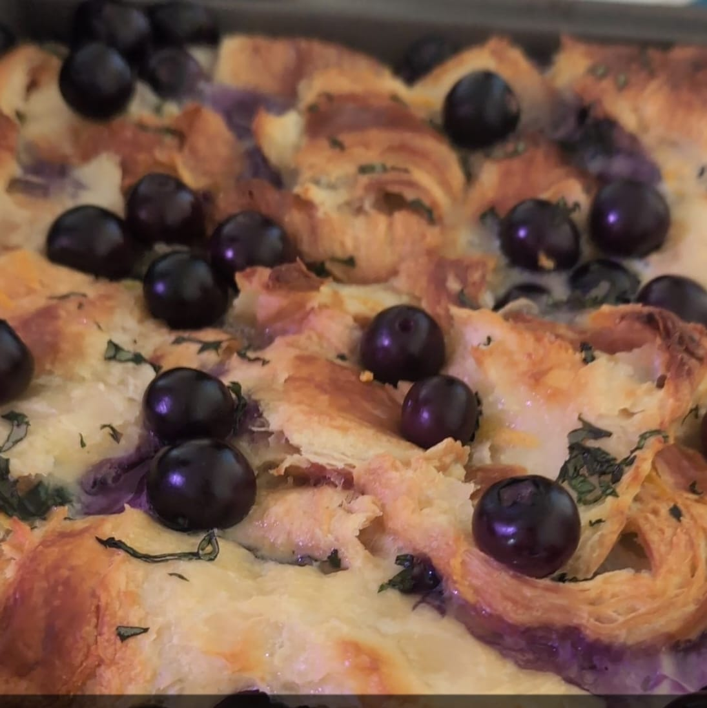

Croissant Bake

Description
Disassembled croissants baked with fresh berries and homemade custard.
Ingredients for 2 Servings
- 8 Croissants
- Pint of blueberries
- Butter
- 14 oz cream cheese
- 1 1/4 cup sugar
- 6 egg
- 2 C half & half cream
- 1 tbsp vanilla extract
- 2 tsps lemon zest
- 1/4 tsp salt
- Icing sugar for garnish
Steps
- Pre heat oven to 350F
- Pull croissants apart into chunks and add to buttered 9x9 baking sheet. Bake for 7-10 min until golden. Set aside, turn off oven
- Make custard. Beat cream cheese and sugar until smooth in mixing bowl. Beat in eggs until smooth, then add cream, lemon juice, vanilla and salt
- Add berries to the croissants and pour custard evenly ofer the dish. Press down so that croissants are submerged
- Cover with foil, refrigerate overnight
- Preheat oven to 350F again. Bake with foil for 30 minutres, then remove and bake uncovered for 15 more
- Sprinkle with icing sugar and serve warm
Back